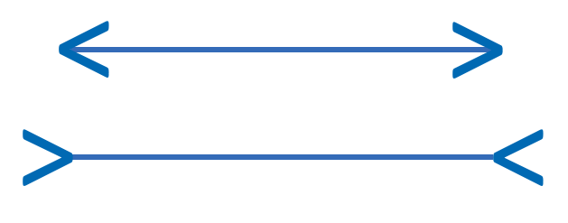
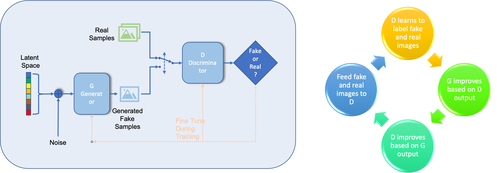

2.5 Attacks
Especially image classification models have shown to be susceptible to attacks which leads to wrong classifications. This could lead to
- Traffic sign misclassification
- Avoiding face detection
How a attack can be performed is described by Goodfellow et al. in (Goodfellow, Shlens, and Szegedy 2014)
2.5.1 Adding noise to image leads to misclassification
Figure from Image Credit: Goodfellow et al. (Goodfellow, Shlens, and Szegedy 2014))
2.5.2 But what about attacks on human perception?
Which statement is correct?
Top line longer
- Bottom line longer
- Both are same length
Is this a picture of a real person?
Look at the picture below, is it a real person or an animation?
Figure from https://commons.wikimedia.org/wiki/File:Woman_1.jpg (Image Credit: Owlsmcgee [Public domain] )
{kind=link}
The image is create using a generative adversarial network (GAN), see below for the principle, for detailed description see https://medium.com/ai-society/gans-from-scratch-1-a-deep-introduction-with-code-in-pytorch-and-tensorflow-cb03cdcdba0f

References
Goodfellow, Ian J, Jonathon Shlens, and Christian Szegedy. 2014. “Explaining and Harnessing Adversarial Examples.” arXiv Preprint arXiv:1412.6572.